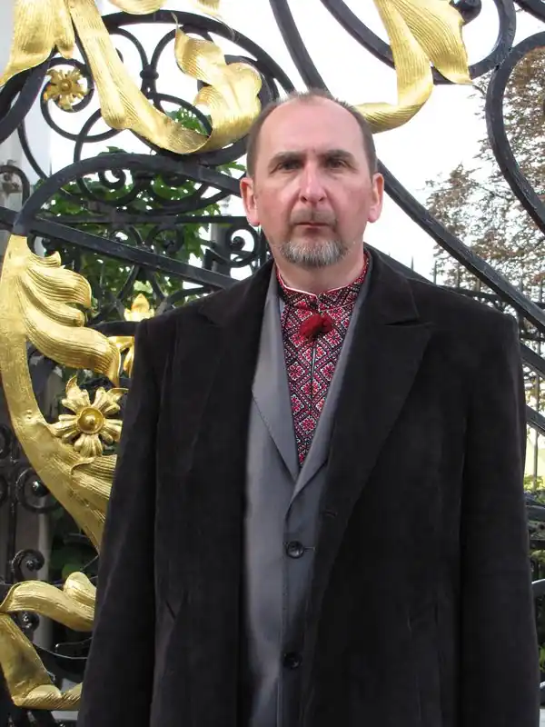

Гребенюк Віктор Іванович, псевдонім Брат Віктор (*29 вересня 1959, Луцьк) — український літератор, член Спілки християнських письменників України (2012).
Народився в робітничій сім'ї. 1985 року закінчив Український поліграфічний інститут ім. І. Федорова у Львові (редактор наукової, технічної та інформаційної літератури), 1998-го — Волинську семінарію УПЦ КП в Луцьку, залишившись мирянином. Працював на різних посадах у видавничій справі та релігійній журналістиці. Був редактором першої на Волині в наші часи релігійної газети "Жива вода" (1990—1991 рр.). На початку 90-х став кореспондентом міжконфесійного Агентства релігійної інформації (АРІ) по Волинській області. У 1996 році редагував газету "Єдина Церква" — тогочасний орган Волинського духовного управління Київського Патріархату. Крім того, дописував до низки християнських видань, вів релігійні курси, коментував святкові богослужіння у прямому ефірі. Нині літературний редактор інформаційно-видавничого центру Волинської єпархії ПЦУ, журналу "Педагогічний пошук".
Із грудня 2012 р. член Спілки християнських письменників України. Активна художня творчість Віктора Гребенюка почалася з виходом у 2001 році збірки новел на релігійну тематику "Хрещате". Автор видав її під псевдонімом Брат Віктор, який використав у деяких наступних творах. Із 2004-го став автором численних публікацій і літературним редактором газети "Волинські єпархіальні відомості", укладачем, упорядником, автором передмов книг, що вийшли друком в інформаційно-видавничому центрі Волинської єпархії УПЦ КП. Згодом, у 2006-му, опубліковано уривок з його ще тоді незакінченої містерії "Діяння небожителів" під назвою "Літургія ангельських чинів". У 2011 році побачила світ епічна містерія "Діяння небожителів", над якою автор працював 19 років. Книгу задумано як національний віршований епос, оскільки великих завершених творів такого жанру в українській літературі досі не існувало. Вона здобула третє місце на конкурсі "Європейська християнська книга — 2011", Міжнародну премію ім. Пантелеймона Куліша (2015) та прихильність критики. Два розділи перекладено на іноземні мови: "Акафіст Пресвятій Богородиці, у чудотворній Холмській іконі прославленій" – на англійську[3], трагедію "Сто тисяч" – на грузинську. Того ж року видано "Акафіст Пресвятій Богородиці перед Її образом "Нерушима Стіна"". Брат Віктор — перший вітчизняний письменник, який пише в цьому жанрі відповідно до візантійських взірців: почасти ритмізованою прозою, почасти римованою поезією (досі на Русі-Україні численні акафісти створювались і перекладалися прозою чи верлібром). Почин, попри опір консерваторів, підхопили інші автори.Такі акафісти припали до душі вірянам. Твір служать, публікують у молитовних виданнях. 2012 року з'явилася друком книга "Тетрамерон" (куди ввійшли й більшість творів зі збірки "Хрещате") із сорока новел релігійного звучання. Їх інсценізують, школярі вивчають у курсі "Література рідного краю". Друге, перероблене видання опублікувало в 2017 році як електронну книгу київське Мультимедійне видавництво Стрельбицького. У 2014 році вже під автонімом Віктор Гребенюк вийшла поема "Європа. Луцьк. 1429-й" — перший літературно-художній твір про з'їзд монархів Європи в XV ст. (містить розповідь про хід цього конгресу і легендарне пророцтво про майбутнє України). Також видано шрифтом Брайля (Київ – Луцьк: Braill-Studio, 2019). У 2017 році в Мультимедійному видавництві Стрельбицького електронною книгою вийшла збірка ""Ефект Вертера" та інші новели", а в наступному там же в авторському перекладі на російську — збірник вибраних новел "У полум'ї". 2018 року ""Ефект Вертера" та інші новели" записано на луцькій студії "Крок назустріч" як звукову книгу, у видавництві "Надстир'я" видано паперову версію. Тоді ж вибрані твори з цієї збірки та з "Тетрамерона" побачили світ у бібліотечці всеукраїнської газети "Вісник + К" (№ 10, "Розстріляна коляда"). Ряд новел з "Ефекту Вертера..." удостоєно нагород на всеукраїнських і міжнародних конкурсах. Джерело: Вікіпедія